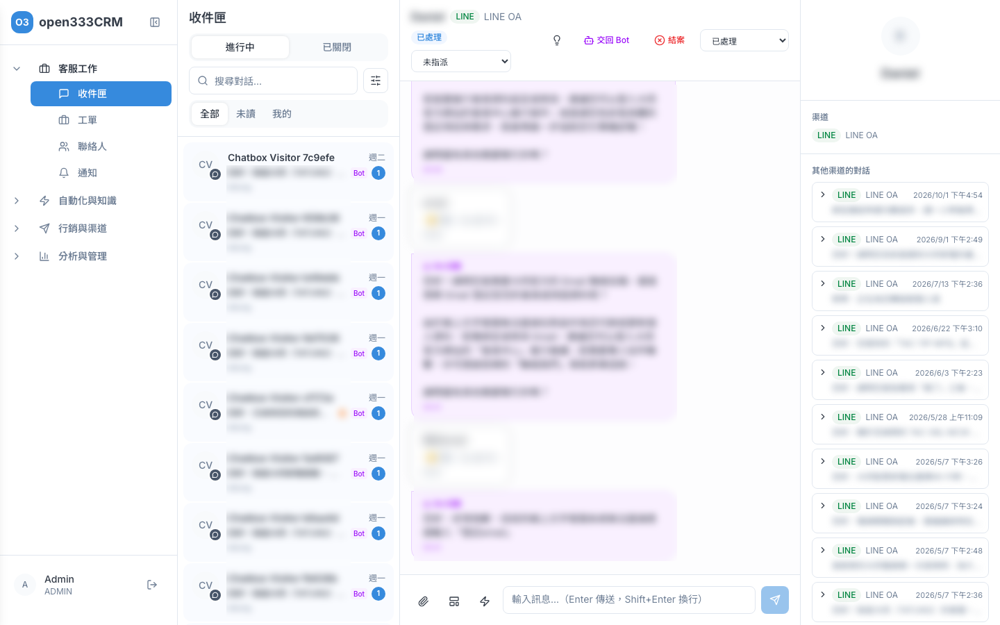
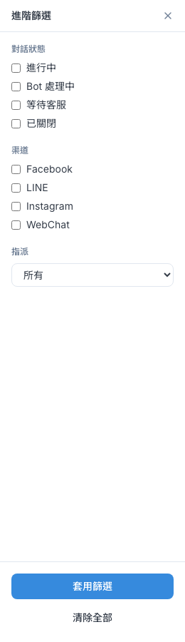
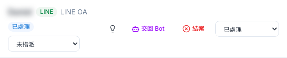
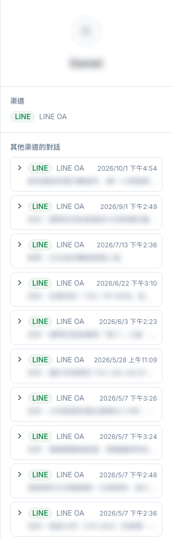
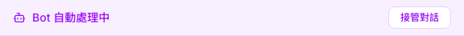
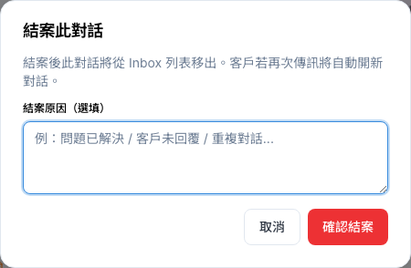

收件匣
LINE、Facebook、Instagram、網頁聊天的訊息全部集中在這裡。你可以看 Bot 回了什麼、需要時接手親自回覆、處理完結案或開工單追蹤。
1 這頁能做什麼
收件匣是客服每天最常待的地方。畫面分三欄：左邊是對話列表，中間是聊天內容，右邊是這位顧客的資料。從左側選單「客服工作 → 收件匣」進入。

2 對話列表與篩選
左欄列出所有對話，最新的在最上面。用上方的分頁和搜尋，很快就能找到你要處理的那一筆。
- 上方切換「進行中」或「已關閉」。看已關閉的對話時，可以選「最近 7 天／最近 30 天／最近 90 天」。
- 「進行中」底下再分「全部」「未讀」「我的」（指派給你的）。
- 在「搜尋對話...」輸入聯絡人名稱或訊息內容。
- 要更精準，按搜尋框右邊的滑桿按鈕，打開「進階篩選」，勾選「對話狀態」「渠道」，選「指派」對象，再按「套用篩選」。
- 套用後，列表上方會出現篩選條件和「篩選結果：N 個對話」。按條件旁的 X 移除，或回到進階篩選按「清除全部」。

列表上的小標記
| 看到什麼 | 代表 |
|---|---|
| 頭像右下角的小圖示 | 這筆對話來自哪個渠道（LINE、Facebook…） |
| 第三行的小字 | 渠道名稱。同時有好幾個 LINE 官方帳號時，用它分辨 |
| 紫色「Bot」 | 目前由 Bot 自動回覆中 |
| 藍色數字 | 還沒讀的訊息數 |
| 檔案小圖示 | 這筆對話已經開了工單 |
| 紅字預覽 | 最後一則訊息沒有送出，顧客沒收到 |
3 打開對話與顧客資料
點左欄任一筆對話，中間會顯示聊天內容，右邊顯示這位顧客的資料。回覆前先看一眼右邊，能少問很多問題。
表頭

| 看到什麼 | 說明 |
|---|---|
| 渠道標籤 | 顧客從哪個渠道傳來，例如「LINE」加上官方帳號名稱 |
| 狀態 | 「Bot 處理中」表示 Bot 在回；「已處理」表示客服已接手處理中；「已關閉」表示已結案 |
| 負責客服下拉（顯示「未指派」或客服名字） | 把這筆對話交給某位客服。選了就立刻生效 |
| 燈泡按鈕 | AI 建議回覆，見第 7 節 |
| 「交回 Bot」 | 客服接手後才會出現，見第 4 節 |
| 紅色「結案」 | 關閉這筆對話，見第 8 節 |
訊息泡泡
| 看到什麼 | 代表 |
|---|---|
| 白色泡泡（靠左） | 顧客傳來的訊息。下方會標情緒（正面／中性／負面） |
| 紫色泡泡，標「Bot 回覆」 | Bot 自動回覆。會顯示「信心值」、怎麼找到答案（關鍵字命中、知識庫命中…）與「參考來源」 |
| 藍色泡泡（靠右） | 客服回覆的訊息 |
| 標「系統自動發送」 | 系統替顧客送出的登記或綁定訊息，不是 AI 回的 |
| 紅字「這則訊息沒有送出，對方並未收到」 | 這則訊息沒送到顧客那邊，冒號後面會寫原因。客服自己回的訊息、自動送出的訊息都會這樣標示。請確認原因後重新回覆一次，或改用其他方式聯繫 |
| 黃框「需要客服處理」 | 系統沒辦法自動把這位顧客的帳號整合起來，請到「聯絡人」頁手動合併 |
右側顧客資料

| 區塊 | 說明 |
|---|---|
| BOT 狀態 | Bot 處理中時顯示，看得到 Bot 已經回了幾次 |
| 結案資訊 | 已結案且有工單時顯示：滿意度評分、首次回覆時間、關閉時間 |
| 渠道 | 這位顧客用過的渠道 |
| 其他渠道的對話 | 同一位顧客在別的渠道的對話（例如 LINE 和 Facebook 都有傳訊息）。點一下展開最近 20 則訊息 |
| 聯絡人標籤 | 貼在顧客身上的標籤，這裡只能看。要改請到「聯絡人」頁 |
| 對話標籤 | 貼在這筆對話上的標籤。從「選擇標籤...」挑一個按「+」加上，按標籤上的 X 移除 |
| 自訂屬性 | 顧客的其他資料，例如會員等級 |
| 「建立工單」「查看完整資料」 | 開工單（第 9 節），或到聯絡人頁看完整資料 |
4 接管 Bot 與交回 Bot
Bot 處理中的對話，輸入框是鎖住的。顧客需要真人協助時，由你「接管」；處理完再「交回 Bot」，讓 Bot 繼續自動回覆。

接管對話
- 打開一筆標著「Bot」的對話。
- 按上方橫幅或輸入框上方的「接管對話」。
- 對話會指派給你，狀態變成「已處理」（客服處理中），輸入框就能打字了。
交回 Bot
- 處理完後，按表頭紫色的「交回 Bot」。
- 狀態變回「Bot 處理中」，訊息區出現一行「（你的名字）把對話交回 Bot」。之後顧客再傳訊息，Bot 會接著回。
5 回覆訊息
接管後，在下方輸入框打字回覆。訊息會從顧客原本的渠道送出，例如 LINE 的對話就回到 LINE。
- 在「輸入訊息...」框打字。按 Enter 送出，Shift+Enter 換行。用注音輸入法選字時按 Enter 不會誤送。
- 或按右邊的紙飛機按鈕送出。
LINE 快速回覆按鈕
LINE 的對話可以在訊息下方附上按鈕，顧客點一下就能回覆，不用自己打字。
- 按輸入框左邊的閃電按鈕（只有 LINE 對話才有）。
- 輸入「按鈕文字」（20 字以內）。「點擊後送出文字」可以留空，留空就送出按鈕上的字。
- 按「加入」。最多可以加 13 個按鈕。有設定好的常用組合時，也可以從「套用預設組」一次帶入。
- 打好訊息後送出，按鈕會跟著這則訊息出現在顧客的 LINE 裡。
傳送圖片
- 按輸入框左邊的迴紋針按鈕。
- 選一張 PNG 或 JPG 圖片（20MB 以內）。選好就會直接送出，不會先預覽，請確認是對的圖再選。
6 插入模板
常常要回的話，例如營業時間、退換貨說明，可以用模板一鍵帶進輸入框，再視情況修改。
- 按輸入框左邊的模板按鈕（滑鼠移上去顯示「模板」）。
- 下方出現「選擇模板」。用上方分類切換，或在「搜尋模板...」輸入關鍵字。
- 點一個模板。沒有要填的內容，就直接帶進輸入框。
- 標著「含變數」的模板，會先出現「填入變數值：」畫面，例如顧客姓名。填好看一下預覽，按「插入」。
- 帶進輸入框後，確認內容再送出。模板有附快速回覆按鈕的話，也會一起帶入。
7 AI 建議回覆
不確定怎麼回時，可以請 AI 根據顧客最後一則文字訊息，到知識庫找答案，給你幾則建議回覆參考。
- 按表頭的燈泡按鈕（「AI 建議回覆」）。對話已結案時不會顯示。
- 聊天區右上角出現「AI 建議回覆」，每則建議附上信心值（綠色最有把握、黃色普通、紅色較沒把握）和參考的知識庫文章。
- 挑一則合適的，按它下方的「採用」。建議的文字會帶進輸入框，面板同時關閉。
- 視情況修改文字，確認後再送出。「採用」不會直接送出，送出前你都可以改。
8 結案
問題處理完，就把對話結案。結案後對話會從「進行中」移到「已關閉」；顧客之後再傳訊息，系統會自動開一筆新對話。
- 按表頭紅色的「結案」。
- 跳出「結案此對話」，可以在「結案原因（選填）」寫一句，例如「問題已解決」「客戶未回覆」。
- 按「確認結案」。

9 從對話建立工單
需要後續追蹤的問題（例如要等廠商回覆、要安排維修），從對話直接開一張工單。顧客和這筆對話會自動帶進工單，不用另外找。
- 按右側的「建立工單」，跳出「建立案件」。
- 「來源對話」和「聯絡人」已經自動帶入，不能修改。
- 填「案件標題」（必填，100 字以內），需要的話寫「問題描述」。
- 選「優先級」（預設「中」）和「分類」（必填）。
- 「指派給」「SLA 政策」可以先不選；SLA 政策留著「依優先級自動套用」就好。
- 按「建立案件」，系統會直接帶你到這張工單的頁面。
工單的欄位與後續處理，請看「02 · 工單」。
10 登記連結與綁定連結
同一位顧客可能同時用 LINE 和 Facebook 找你。右側的這幾個按鈕，可以請顧客留下 Email、手機，或綁定其他渠道的帳號，系統就能認出「這是同一個人」，把資料整合在一起。
| 按鈕 | 做什麼 |
|---|---|
| 「傳送 email 登記連結」 | 在對話裡傳一個連結，請顧客填 Email |
| 「傳送手機登記連結」 | 在對話裡傳一個連結，請顧客填手機號碼 |
| 「傳送跨渠道綁定連結」 | 傳一組綁定代碼，顧客到其他渠道輸入後就會綁在一起 |
- 按右側對應的按鈕。
- 按鈕下方出現綠字「已在對話中送出…」就成功了。黃字是提醒（例如申請次數太多、沒有其他可綁定的渠道），紅字表示沒有送到顧客。